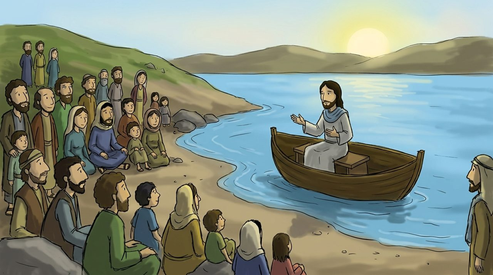
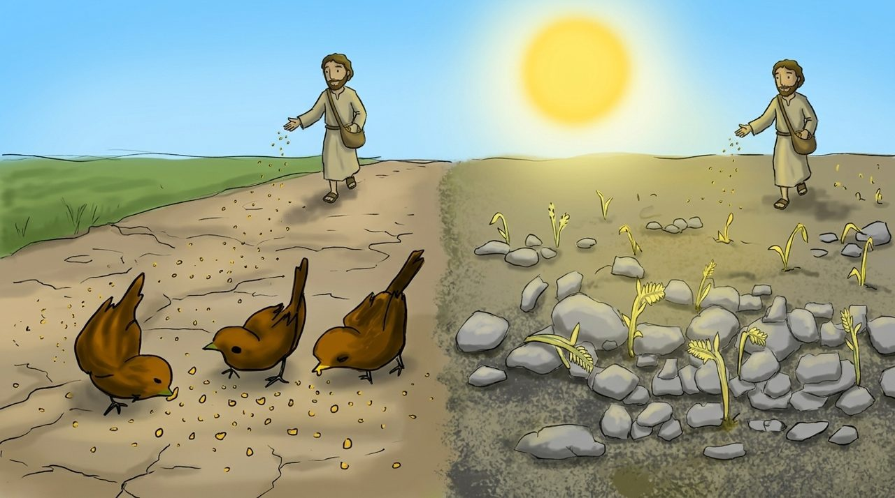
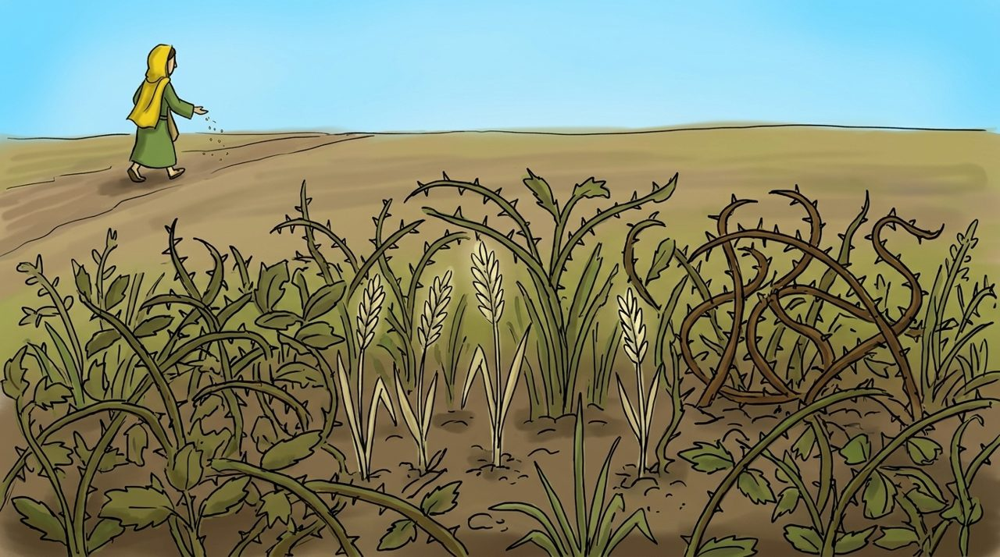

Uşaqlar üçün Müqəddəs Kitab dərsi · Matta, 17-ci dərs
Toxum əkən adam
Matta 13:1–23
Sarı sözlərə toxun, mənası çıxacaq. 🔊 düyməsi Azərbaycan dilində oxuyur.
Bu gün nə öyrənəcəyik?
İsanın danışdığı toxum əkən adam məsəlini öyrənəcəyik.
Toxumun Allahın Kəlamı, torpağın isə ürəyimiz olduğunu öyrənəcəyik.
Kəlamı yaxşı qəbul edən yaxşı torpaq olmağa qərar verəcəyik.

Səhnə 1 · Matta 13:1–3
Qayıqda öyrədən İsa
Çox adam toplandığı üçün İsa qayığa minib oturdu, insanlar isə sahildə durub qulaq asdılar.
İsa çox şeyi lərlə öyrədirdi. Məsəl sadə hekayənin içində Allahın Padşahlığının sirrini daşıyır.

Səhnə 2 · Matta 13:4–6, 19–21
Yol kənarı və daşlıq
Bəzi lar yol kənarına düşdü, quşlar gəlib onları yedi. Bu, Kəlamı eşidib tez unudan ürəkdir.
Bəziləri torpağı az olan daşlığa düşdü. Tez cücərdi, amma ü olmadığı üçün günəş çıxanda qurudu. Əvvəlcə sevinib çətinlik gələndə tez təslim olan ürəkdir.

Səhnə 3 · Matta 13:7, 22
Tikanlıq
Bəzi toxumlar ların arasına düşdü. Tikanlar böyüyüb cücərtini boğdu.
Bu, Kəlamı eşitsə də, qayğı və tamah çox olduğu üçün Kəlamın böyüyə bilmədiyi ürəkdir.
Səhnə 4 · Matta 13:8–9, 23
Yaxşı torpaq
Bəzi toxumlar isə a düşdü. Böyüyüb yüz, altmış, otuz qat verdi!
Kəlamı eşidib anlayan və ona əməl edən ürək yaxşı torpaqdır. İsa dedi: “Qulağı olan eşitsin.”
Bu həftənin əzbər ayəsi
“Yaxşı torpağa səpilən isə Kəlamı eşidib anlayan adamdır.”
Matta 13:23 · uşaqlar üçün sadə dildə
torpağa səpilən isə eşidib adamdır.
Boş yerlər üçün sözləri ardıcıl seç.
Söz lüğəti
Toxun, mənasına bax
Yoxlama sualları
4 sual
Gəlin düşünək
Mənim ürəyim dörd torpaqdan hansına bənzəyir?
Kəlamın ürəyimdə böyüməsinə mane olan “tikan” nədir?
Yaxşı torpaq olmaq üçün nə etməliyəm?
Rəsm çək
Yaxşı torpaqda bol bitən zəmini və yanında özünü çək.
Kağıza çək və şəklini müəllimə göndər
Necə yaxşı torpaq olacaqsan?
Birlikdə dua edək
İsa, Allahın Kəlamını toxum kimi ürəyimə səpdiyin üçün Sənə şükür edirəm. Ürəyim yol kənarı, daşlıq və ya tikanlıq deyil, yaxşı torpaq olsun. Kəlamı eşidib anlayım, ona əməl edim və çox bəhrə verim. İsa Məsihin adı ilə dua edirəm. Amin.